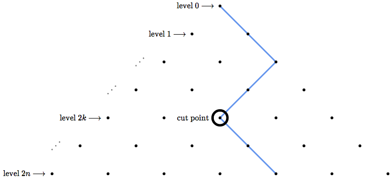
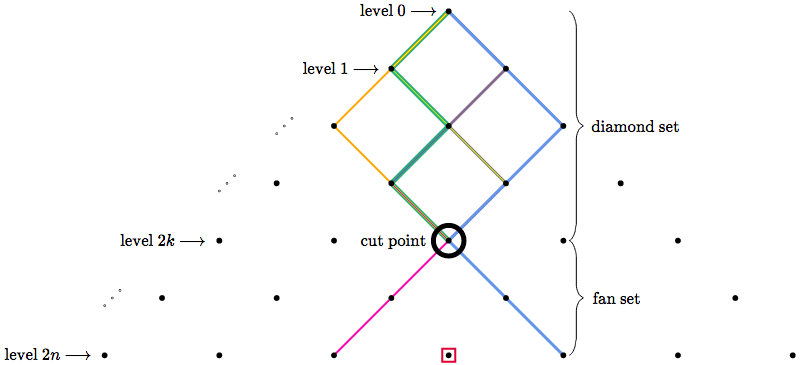

Theorem: $$\sum_{k=0}^{k=n}\binom{2k}{k}\binom{2n-2k}{n-k}=4^n$$
Proof:
We will prove the above using only lattice grids. To read this article, you must first have a basic understanding of lattice grids. An example of a lattice grid can be found here in the second question. The drawing in the linked example shows a rectangular lattice grid with line segments traveling right or up. Our examples orient the grid so that the starting point is on top and the paths travel diagonally down, either right or left.
Consider the pyramid below of height $2k$, where each path starts at the top and walks always downwards. A red path and an orange path are shown as examples.
I chose the variable $2k$ for the height because we will only be dealing with even height pyramids today.
Now consider the set of paths from the top to the bottom center (thanks to the even height, there will be a bottom *center*). We will call this the diamond set. Elements of this set are shown below as an example. Each element is painted a single color.
And now consider the set of paths which *avoid* the center line after leaving the top. We call this the fan set, as shown below.

It turns out that there is a beautiful bijection between these sets! And here it is:
Given any diamond path which leaves the top leftwards (rightwards), choose the leftmost (rightmost) column that intersects the path. Choose the bottommost intersection of that column and the path. We will call this point the reflection point.
Draw a vertical line through the reflection point, then reflect the part of the path *below* it across this line.

For the upper section of path (from the **level 1 point** to the **reflection point**), rotate it 180 degrees.


Great scott!
By the nature of reflection, if the reflection wall is $c$ columns from the center, then the bottom fan point is $2c$ columns from the center.
Let us now talk about the inverse of this function:
Take a fan path, and look at the bottom fan point. Count the columns it is away from the center, then divide by $2$ to get the distance of the reflection line from the center. Follow the fan path from the bottom upwards until it touches the reflection line. This intersection is the reflection point!. Reflect the bottom piece and rotate the top portion like we did before...
...reflect...


...and rotate...


With a little extra rigor, it can be verified that these are indeed inverses. Therefore, the functions are bijections!
So the number of diamond paths is equal to the number of fan paths! That number is $\binom{2k}{k}$. (Diamond paths have length $2k$, and we must choose exactly $k$ of the edges to be in the diagonally right direction.)
Back to our handy dandy pyramid. Consider that the pyramid has height $2n$, and we would like all of our paths to go through a center point at height $2k$, then avoid the center afterwards.
The result is that the top section (from level $0$ to level $2k$) is a diamond path and has $\binom{2k}k$ possibilities, and the bottom section (from level $2k$ to level $2n$) is a fan path which has $\binom{2n-2k}{n-k}$ possibilities, and therefore the total number of possibilities is $\binom{2k}{k}\binom{2n-2k}{n-k}$.
Summing these from $k=0$ to $k=n$ yields all possible paths! If this is not clear, consider that every path must intersect the centerline because its very first point intersects the center line. If we take the bottomost intersection with the centerline, then this splits the path into two pieces. The piece from the beginning to this intersection is a diamond path. And the piece from the intersection to the bottom is a fan path.
Finally, we find the total number of paths a different way. Consider you are at the top and want to know the total number of possible paths. You will pass $2n$ levels exactly (levels $0$ through $2n-1$), and as you pass each, you will have exactly $2$ options (left or right). Therefore, the total number of paths is $2^{2n}=4^n$.
Yoinks! $$\sum_{k=0}^{k=n}\binom{2k}{k}\binom{2n-2k}{n-k}=4^n$$